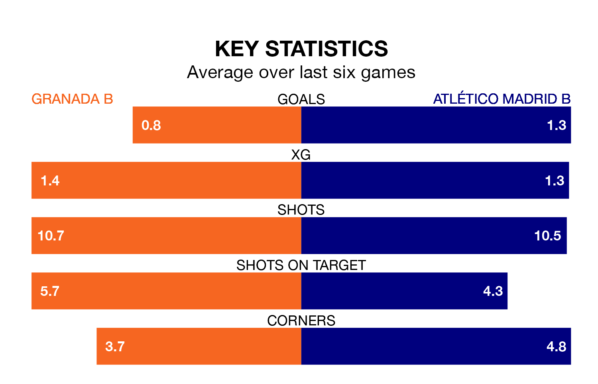

Atlético Madrid B are strong favourites to take all three points despite Granada B's home advantage in Sunday's early match at the Estadio Miguel Prieto Garcia.
*Betting Company* are offering odds of 1.92 on Atlético Madrid B sealing the win, with the visitors sitting 12th in Primera Division RFEF Group 2 table.
Granada B, who are 20th in the league and 24 points behind Atlético Madrid B, are priced at 3.53 to win. A draw is set at 3.27.
Granada B are in terrible form in Primera Division RFEF Group 2, with no wins and a draw from their last six games.
With two wins and three draws over that period, Atlético Madrid B's form is much better – they have taken nine points from 18, compared to the hosts' one.
With 17 goals in 28 games so far this season, Granada B are the league's joint-third-lowest scorers with 0.6 goals per game. And they are conceding more than average, letting in 46 goals at a rate of 1.6 per game.
The away team, meanwhile, are above average scorers, with 1.5 goals per game, compared to a league average of 1.1. They have conceded 1.3 goals per game.
In Diego Vicente Bri Carrazoni, Atlético Madrid B have one of the league's most on-form strikers so far this season. He has notched seven goals in 21 appearances, to sit sixth in the scoring charts.
His goal rate of one every 208 minutes is quicker than that of Julio Martínez Cortés, Granada B's top scorer with a goal every 273 minutes, and a total of three goals in 14 games.
Granada B's last match was on March 17, a 4-3 loss against UD Melilla, with Adam Griger, Diego Lopez Jimenez and Sergio Rodelas Pintor getting the goals for Granada B.
Atlético Madrid B beat Real Madrid B 2-0 last time out, also on Sunday, with Abdellah Raihani Ennaou and Mariano Gómez on the scoresheet.
Updated: 10:19 (UTC), 22/03/24